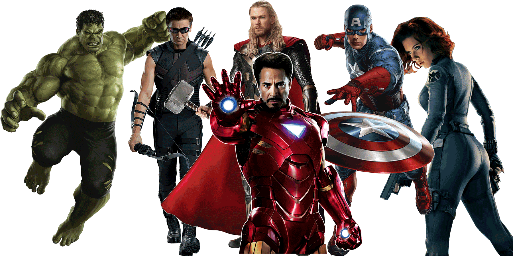

 «Месники» (англ. Avengers) — елітна команда супергероїв з коміксів видавництва Marvel. Створена письменником Стеном Лі та художником Джеком Кірбі, команда вперше з'явилася у коміксі The Avengers #1 у вересні 1963 року. Месники, названі згодом «Наймогутнішими героями Землі», спочатку складалися з Людини-Мурахи (Генк Пім), Оси (Дженет ван Дайн), Тора, Залізної Людини (Тоні Старк) і Халка (Брюс Баннер). Проте з самого початку в складі команди стали відбуватися зміни: Халк незабаром покинув Месників[1], і до них приєднався Капітан Америка[2]. Склад, що змінювався, став візитівкою команди, хоча деяка сталість все-таки зберігалася: Месники билися з такими ворогами, здолати яких поодинці не міг жоден супергерой - так з'явилася фірмова фраза: «Месники, збір!»(англ. Avengers Assemble!). Протягом усього часу існування команди у ній побували люди, мутанти, роботи, боги, прибульці, надприродні істоти і навіть колишні лиходії.
 Асґардський бог Локі укладає угоду з повелителем інопланетної раси, відомої як Чітаурі: в обмін на Тессеракт — невичерпне джерело космічної енергії, що має кубічну форму, Чітаурі нададуть Локі армію для захоплення Землі. Нік Ф'юрі, директор агентства Щ. И. Т. прибуває на наукову базу, де астрофізик Ерік Селвіг займається дослідженням Тессеракту . Селвіг і агент Марія Хілл повідомляють Ф'юрі, що куб нестабільний і можливий викид енергії. Об'єкт активізується, відкриваючи портал, що надає Локі шлях на Землю. Він забирає Тессеракт і за допомогою своєї палиці отримує контроль над Селвігом і декількома агентами, серед яких Клінт Бартон, більш відомий, як Соколине око. З їхньою допомогою Локі тікає, а портал вибухає, знищуючи базу. Ф'юрі вирішує відродити скасовану раніше програму «Месники». Агент Наташа Романофф, більш відома як Чорна вдова, відправляється в Індію, де знаходить фахівця з гамма-випромінювання, доктора Брюса Беннера. Хоча той і розуміє, що Щ. И. Т. хоче використовувати його альтер — его, Халка в своїх цілях, він погоджується на пропозицію. Агент Філ Колсон відвідує Тоні Старка та його помічницю і кохану Пеппер Поттс, умовляючи Старка завершити дослідження Селвіга. Сам Ф'юрі відвідує Стіва Роджерса, який був першим американським супергероєм — Капітаном Америкою, і з часів Другої світової війни був заморожений на 70 років. Герої прибувають на літаючий авіаносець. Локі знаходять в Штутгарті. Поки Соколине око викрадає для нього іридій, необхідний для стабілізації куба, Локі змушує цивільне населення присягнути йому на вірність, але Капітану Америці і Залізній людині вдається взяти його в полон. Під час транспортування на них нападає Тор — зведений брат Локі і бог грому. Він намагається переконати брата повернути Тессеракт і після недовгої сутички з Капітаном Америкою і Залізною людиною розуміє, що вони переслідують ті самі цілі, і приєднується до команди.
Олійник Володимир
Асґардський бог Локі укладає угоду з повелителем інопланетної раси, відомої як Чітаурі: в обмін на Тессеракт — невичерпне джерело космічної енергії, що має кубічну форму, Чітаурі нададуть Локі армію для захоплення Землі. Нік Ф'юрі, директор агентства Щ. И. Т. прибуває на наукову базу, де астрофізик Ерік Селвіг займається дослідженням Тессеракту . Селвіг і агент Марія Хілл повідомляють Ф'юрі, що куб нестабільний і можливий викид енергії. Об'єкт активізується, відкриваючи портал, що надає Локі шлях на Землю. Він забирає Тессеракт і за допомогою своєї палиці отримує контроль над Селвігом і декількома агентами, серед яких Клінт Бартон, більш відомий, як Соколине око. З їхньою допомогою Локі тікає, а портал вибухає, знищуючи базу. Ф'юрі вирішує відродити скасовану раніше програму «Месники». Агент Наташа Романофф, більш відома як Чорна вдова, відправляється в Індію, де знаходить фахівця з гамма-випромінювання, доктора Брюса Беннера. Хоча той і розуміє, що Щ. И. Т. хоче використовувати його альтер — его, Халка в своїх цілях, він погоджується на пропозицію. Агент Філ Колсон відвідує Тоні Старка та його помічницю і кохану Пеппер Поттс, умовляючи Старка завершити дослідження Селвіга. Сам Ф'юрі відвідує Стіва Роджерса, який був першим американським супергероєм — Капітаном Америкою, і з часів Другої світової війни був заморожений на 70 років. Герої прибувають на літаючий авіаносець. Локі знаходять в Штутгарті. Поки Соколине око викрадає для нього іридій, необхідний для стабілізації куба, Локі змушує цивільне населення присягнути йому на вірність, але Капітану Америці і Залізній людині вдається взяти його в полон. Під час транспортування на них нападає Тор — зведений брат Локі і бог грому. Він намагається переконати брата повернути Тессеракт і після недовгої сутички з Капітаном Америкою і Залізною людиною розуміє, що вони переслідують ті самі цілі, і приєднується до команди.
Олійник Володимир